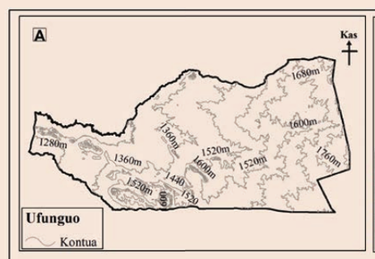
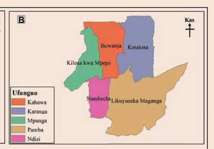
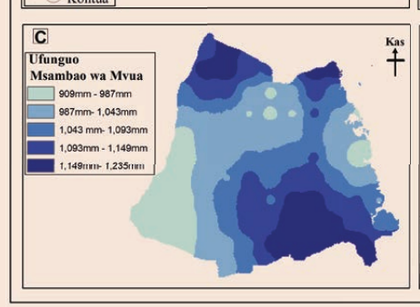
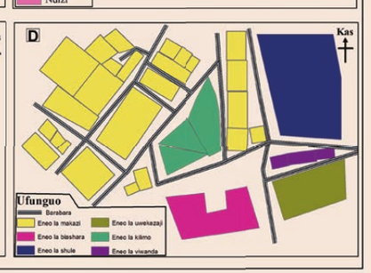

Kazi ya kufanya namba 1
Chunguza Kielelezo namba 7, kisha jibu maswali yanayofuata:




1. Bainisha aina za ramani A, B, C na D kama zilivyowasilishwa kwenye Kielelezo namba 7.
2. Bainisha ramani za thematiki na ramani za jumla katika Kielelezo namba 7.
AUfunguoKontua
BUfunguoKahawaKarangaMpungaPambaNdizi
CUfunguoMsambao wa Mvua909mm - 987mm987mm - 1,043mm1,043 mm - 1,093mm1,093mm - 1,149mm1,149mm - 1,235mm
DUfunguoBarabaraEneo la makaziEneo la biasharaEneo la shuleEneo la uwekezajiEneo la kilimoEneo la viwanda